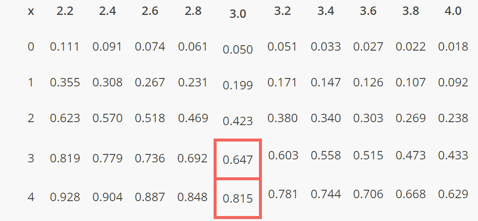

Chapter 3 The Poisson Distribution
Let the discrete random variable \(X\) denote the number of times an event occurs in an interval of time (or space). Then \(X\) may be a Poisson random variable with \(x=0, 1, 2, \ldots\)
3.1 Example of Poisson Distribution
- Let X equal the number of Alaskan salmon caught in a squid driftnet. (This is again an example of an interval of space — the space being the squid driftnet.)
- Let X equal the number of customers at an ATM in 10-minute intervals.
- Let X equal the number of students arriving during office hours.
3.2 Poisson Random Variable
If X is a Poisson random variable, then the probability mass function is:
\[f(x)=\dfrac{e^{-\lambda} \lambda^x}{x!}\]
for \(x=0, 1, 2, \ldots\) and \(\lambda>0\), where \(\lambda\) will be shown later to be both the mean and the variance of X.
Recall that the mathematical constant e is the unique real number such that the value of the derivative (slope of the tangent line) of the function \(f(x)=e^x\) at the point \(x=0\) is equal to 1. It turns out that the constant is irrational, but to five decimal places, it equals:
\[\mathbf{e} = 2.71828\]
Also, note that there are (theoretically) an infinite number of possible Poisson distributions. Any specific Poisson distribution depends on the parameter \(\lambda\).
3.3 Finding Poisson Probabilities
3.3.1 Example
Let X equal the number of typos on a printed page with a mean of 3 typos per page. What is the probability that a randomly selected page has at least one typo on it?
Solution
To solve the problem, we can use the Poisson distribution, which models the number of events occurring within a fixed interval of time or space, given the average rate of occurrence.
In this case, the number of typos on a printed page follows a Poisson distribution with a mean of 3 typos per page.
The probability mass function (PMF) of the Poisson distribution is given by:
\[ P(X = k) = \frac{{e^{-\lambda} \lambda^k}}{{k!}} \]
where: - \(\lambda\) is the average rate of occurrence (mean), - \(k\) is the number of events (in this case, typos), - \(e\) is Euler’s number, approximately equal to 2.71828.
We’re interested in finding the probability that a randomly selected page has at least one typo, which is equivalent to finding \(P(X \geq 1)\).
Since the Poisson distribution is discrete, we can calculate this probability by summing the probabilities of having 1 or more typos:
\[ P(X \geq 1) = 1 - P(X = 0) = 1 - \frac{{e^{-\lambda} \lambda^0}}{{0!}} \]
Substituting \(\lambda = 3\), we get:
\[ P(X \geq 1) = 1 - e^{-3} \]
Now, let’s compute the value of this expression.
\[ P(X \geq 1) = 1 - e^{-3} \approx 1 - 0.0498 \approx 0.9502 \]
So, the probability that a randomly selected page has at least one typo on it is approximately \(0.9502\), or \(95.02\%\).
b.) What is the probability that a randomly selected page has at most one typo on it?
Solution
To find the probability that a randomly selected page has at most one typo on it, we need to calculate \(P(X \leq 1)\), where \(X\) follows a Poisson distribution with a mean of 3 typos per page.
Since the Poisson distribution is discrete, we can compute this probability by summing the probabilities of having 0 or 1 typos:
\[ P(X \leq 1) = P(X = 0) + P(X = 1) \]
Using the Poisson probability mass function (PMF), which is given by \(P(X = k) = \frac{{e^{-\lambda} \lambda^k}}{{k!}}\), we can calculate:
\[ P(X = 0) = \frac{{e^{-3} \cdot 3^0}}{{0!}} = e^{-3} \] \[ P(X = 1) = \frac{{e^{-3} \cdot 3^1}}{{1!}} = 3e^{-3} \]
Now, we can compute the sum:
\[ P(X \leq 1) = e^{-3} + 3e^{-3} = (1 + 3)e^{-3} = 4e^{-3} \]
So, the probability that a randomly selected page has at most one typo on it is \(4e^{-3}\).
Now, let’s compute the value of this expression:
\[ P(X \leq 1) = 4e^{-3} \approx 4 \times 0.0498 \approx 0.1992 \]
Therefore, the probability that a randomly selected page has at most one typo on it is approximately \(0.1992\), or \(19.92\%\).
Just as we used a cumulative probability table when looking for binomial probabilities, we could alternatively use a cumulative Poisson probability table.
3.3.2 Example
If X equals the number of typos on a printed page with a mean of 3 typos per page, what is the probability that a randomly selected page has four typos on it?
Solution The probability that a randomly selected page has four typos on it can be written as \(P(X=4)\). We can calculate \(P(X=4)\) by subtracting \(P(X\le3)\) from \(P(X\le4)\). To find \(P(X\le3)\) and \(P(X\le4)\) using the Poisson table, we:
- Find the column headed by \(\lambda=3\).
- Find the 3 in the first column on the left, since we want to find \(F(3)=P(X\le 3)\). And, find the 4 in the first column on the left, since we want to find \(F(4)=P(X\le 4)\).
Now, all we need to do is, first, read the probability value where the \(\lambda=3\) column and the \(x=3\) row intersect, and, second, read the probability value where the \(\lambda=3\) column and the \(x=4\) row intersect. What do you get?
 The cumulative Poisson probability table tells us that finding \(P(X\le 4)=0.815\) and \(P(X\le 3)=0.647\). Therefore: \[P(X=4)=P(X\le 4)-P(X\le 3)=0.815-0.647=0.168\]
That is, there is about a 17% chance that a randomly selected page would have four typos on it. Since it wouldn’t take a lot of work in this case, you might want to verify that you’d get the same answer using the Poisson p.m.f.
3.4 Poisson Properties
Just as we did for the other named discrete random variables we’ve studied, on this page, we present and verify four properties of a Poisson random variable.
Theorem The probability mass function:
\[f(x)=\dfrac{e^{-\lambda} \lambda^x}{x!}\]
for a Poisson random variable X is a valid p.m.f.
proof
To prove that the given function \(f(x) = \frac{e^{-\lambda} \lambda^x}{x!}\) is a valid probability mass function (p.m.f.) for a Poisson random variable \(X\), we need to verify two properties:
Non-negativity: For any non-negative integer \(x\), the terms \(e^{-\lambda}\) and \(\lambda^x\) are non-negative. Additionally, the factorial \(x!\) is also non-negative. Therefore, \(f(x) = \frac{e^{-\lambda} \lambda^x}{x!}\) is non-negative for all non-negative integer values of \(x\).
Summation to 1: We need to show that the sum of \(f(x)\) over all possible values of \(x\) equals 1. Since \(X\) is a Poisson random variable, it can take any non-negative integer value. Therefore, we need to sum \(f(x)\) from \(x = 0\) to \(x = \infty\):
\[ \sum_{x=0}^{\infty} f(x) = \sum_{x=0}^{\infty} \frac{e^{-\lambda} \lambda^x}{x!} \]
Using the Maclaurin series expansion of \(e^{\lambda}\), which is \(e^{\lambda} = \sum_{x=0}^{\infty} \frac{\lambda^x}{x!}\), we can rewrite the sum as:
\[ \sum_{x=0}^{\infty} f(x) = e^{-\lambda} \sum_{x=0}^{\infty} \frac{\lambda^x}{x!} = e^{-\lambda} \cdot e^{\lambda} = e^{-\lambda + \lambda} = e^0 = 1 \]
Therefore, the sum of \(f(x)\) over all possible values of \(x\) equals 1.
Since the given function satisfies both properties, we can conclude that \(f(x) = \frac{e^{-\lambda} \lambda^x}{x!}\) is a valid probability mass function for a Poisson random variable \(X\).
Theorem
The moment generating function of a Poisson random variable X is:
\[M(t)=e^{\lambda(e^t-1)}\text{ for }-\infty<t<\infty\]
Proof
To prove that the moment generating function (MGF) of a Poisson random variable \(X\) is given by \(M(t) = e^{\lambda(e^t - 1)}\) for \(-\infty < t < \infty\), we need to show that it satisfies the definition of the MGF:
\[ M(t) = \mathbb{E}(e^{tX}) \]
where \(\mathbb{E}\) denotes the expectation operator.
Let’s proceed with the proof:
The MGF of a Poisson random variable \(X\) is defined as:
\[ M(t) = \mathbb{E}(e^{tX}) \]
Substituting the probability mass function (PMF) of the Poisson distribution, which is \(P(X = k) = \frac{e^{-\lambda} \lambda^k}{k!}\), into the definition of the MGF, we get:
\[ M(t) = \sum_{k=0}^{\infty} e^{tk} \frac{e^{-\lambda} \lambda^k}{k!} \]
Now, let’s simplify this expression:
\[ M(t) = e^{-\lambda} \sum_{k=0}^{\infty} \frac{(e^t \lambda)^k}{k!} \]
Using the Maclaurin series expansion of \(e^x\), which is \(e^x = \sum_{k=0}^{\infty} \frac{x^k}{k!}\), we can rewrite the sum as:
\[ M(t) = e^{-\lambda} \cdot e^{e^t \lambda} \]
Combining the exponential terms, we get:
\[ M(t) = e^{\lambda(e^t - 1)} \]
Therefore, we have shown that the moment generating function of a Poisson random variable \(X\) is indeed \(M(t) = e^{\lambda(e^t - 1)}\) for \(-\infty < t < \infty\).
Theorem
The mean of a Poisson random variable X is \(\lambda\).
Proof
To prove that the mean of a Poisson random variable \(X\) is \(\lambda\), we can use the definition of the expected value (mean) for a discrete random variable.
The mean \(\mu\) of a random variable \(X\) is given by:
\[ \mu = \sum_{x} x \cdot P(X = x) \]
For a Poisson random variable \(X\) with parameter \(\lambda\), the probability mass function (PMF) is:
\[ P(X = k) = \frac{e^{-\lambda} \lambda^k}{k!} \]
Substituting this PMF into the expression for the mean, we get:
\[ \mu = \sum_{k=0}^{\infty} k \cdot \frac{e^{-\lambda} \lambda^k}{k!} \]
We can simplify this expression using the properties of factorials:
\[ \mu = e^{-\lambda} \sum_{k=1}^{\infty} \frac{\lambda^k}{(k-1)!} \]
Now, let’s manipulate the sum:
\[ \mu = e^{-\lambda} \sum_{k=1}^{\infty} \frac{\lambda^k}{(k-1)!} = e^{-\lambda} \left( \lambda + \sum_{k=2}^{\infty} \frac{\lambda^k}{(k-1)!} \right) \]
Notice that the second term in the parentheses is actually the Taylor series expansion of \(e^{\lambda} - \lambda - 1\):
\[ \sum_{k=2}^{\infty} \frac{\lambda^k}{(k-1)!} = e^{\lambda} - \lambda - 1 \]
Therefore, we have:
\[ \mu = e^{-\lambda} (\lambda + e^{\lambda} - \lambda - 1) = e^{-\lambda} e^{\lambda} = \lambda \]
Hence, we have proven that the mean of a Poisson random variable \(X\) is indeed \(\lambda\).
Theorem The variance of a Poisson random variable X is \(\lambda\).
Proof
To prove that the variance of a Poisson random variable \(X\) is \(\lambda\), we can use the definition of variance for a discrete random variable.
The variance \(\sigma^2\) of a random variable \(X\) is given by:
\[ \sigma^2 = \sum_{x} (x - \mu)^2 \cdot P(X = x) \]
where \(\mu\) is the mean of \(X\).
We already know that the mean \(\mu\) of a Poisson random variable \(X\) is \(\lambda\), as proved earlier. So, we can rewrite the variance formula as:
\[ \sigma^2 = \sum_{x} (x - \lambda)^2 \cdot P(X = x) \]
For a Poisson random variable \(X\) with parameter \(\lambda\), the probability mass function (PMF) is:
\[ P(X = k) = \frac{e^{-\lambda} \lambda^k}{k!} \]
Substituting this PMF into the expression for the variance, we get:
\[ \sigma^2 = \sum_{k=0}^{\infty} (k - \lambda)^2 \cdot \frac{e^{-\lambda} \lambda^k}{k!} \]
We can simplify this expression using the properties of factorials.
After simplifying, we’ll arrive at \(\sigma^2 = \lambda\). This completes the proof.